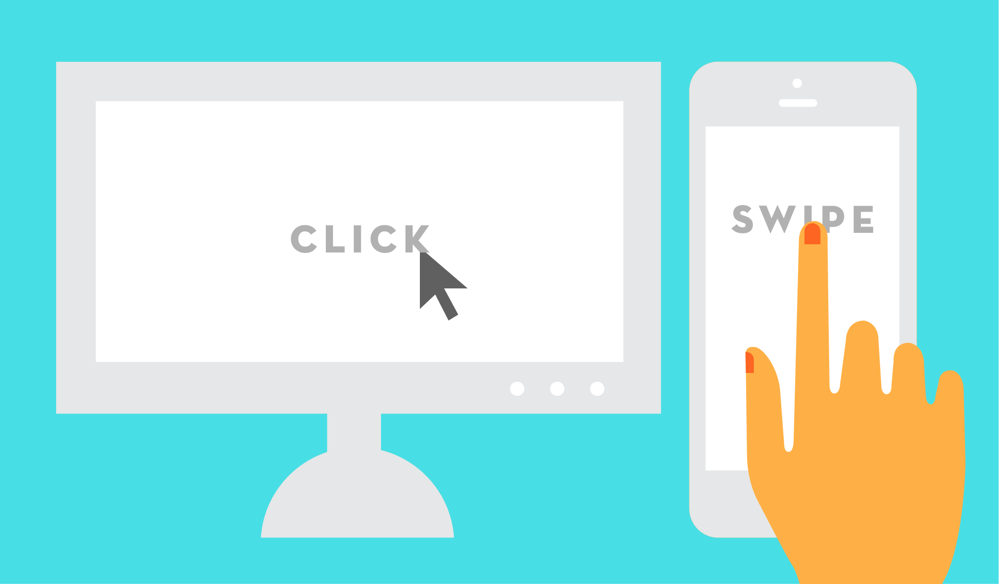
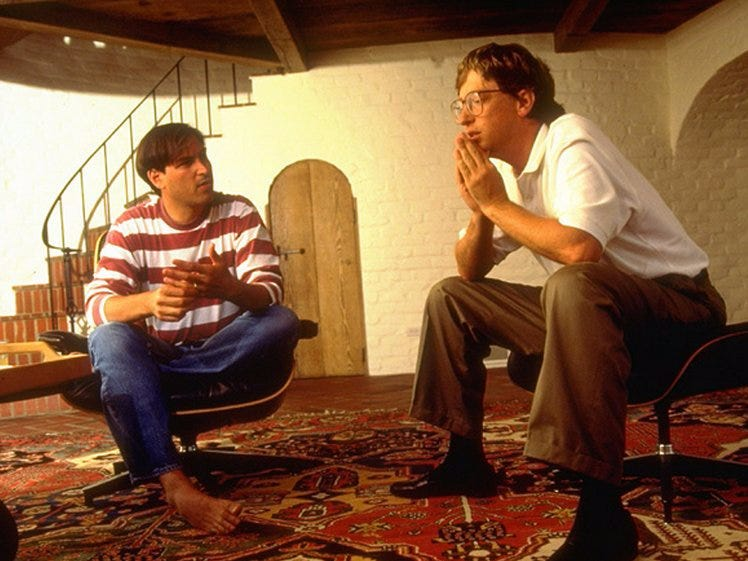

The state of Transition from Types of Device
Was not about interoperability but it happens to be about it


You are working or entertaining yourself with your desktop but at some point in time, you may need to leave your desktop but often at the same time have the desire to continue what we were doing during the time when we would have only our smartphone as an option. Then when leaving our desktop we ask ourselves what are we able to continue doing with our mobile device for example if we were visiting a website or reading a pdf document or a book we would like to continue doing that on our mobile or who knows maybe this slack discussion or this code review also. Facing this situation we use the options that are available to us in my part I just right now did a right-click on my computer and used this google chrome option that allows sending a webpage to your chrome your mobile and Microsoft edge has also this solution but for sure I can't send a webpage consumed on chrome to my edge browser or safari and I am sure that this need exists because I faced it more than once and I have written about it in one of my last articles. But this article is not about the interoperability of tech solutions but about the transition from one type of device to another and why and how we could make this transition better for users certainly geeks and nerds like me who maybe are the only ones who care about such kind of things. I think that this transition can be smoother than it actually is today.
for example, for the browsing part, I think that solution can be easily implemented because we just need to mirror the activity of the desktop browser to the mobile browser in way that when I will take my smartphone I would open my browser in the state that it is on my desktop. When your browser crash and you open it again every kind of browser asks you if you would like to open again the past browser’s tabs. That’s this same feature that I think should be implemented in mobile by letting mobile users have the option to open the state of the browser of their desktop on their mobile or tab but people like me often open millions of tabs and this kind of user activity may raise some memory problem (many tabs) in mobile but software engineers like you and me can design a solution that can handle this memory issues.
If it was not because this webpage that I was reading with my desktop and which I remembered when willing to stop using my desktop I would not be here writing these words. I told to myself maybe I can continue reading it with my smartphone while trying to fall asleep. That’s can be bad behavior to have but an alone man like me who cares. But this simple event remembered me that the big tech companies also have a lot of jobs to be done for making our life easier because as geeky or nerdy we can be sometimes we need to be made aware of features that we may not know and tech companies should keep shipping us complex features that I know that only techy people care about and stop focusing only on mass users even If I agree that this population of users matter a lot because that’s then who makes the whole tech economy by buying tech products unlike techy people like me who are always looking for how to get free things on the internet using every kind of technology like peer to peer. Sharing tabs between Edge, Chrome, and Safari is one of these complex features that few techy people like me need but that should be implemented natively by Microsoft, Apple, and Google. When leaving my windows or Linux desktop it is clear to me that the android that I will be using after or the IOS in your case needs a certain amount of configuration and initialization of environments that would make me feel less like someone having a flow break just because of a type of device switch. This is for sure difficult because there are three big companies, the biggest ones, at stake each one owning an operating system but for the benefit of the tech community this kind of interoperability driven scenario and solution could be implemented if these big tech companies have the gut to implement them because I have seen a lot of good things that they have done together in the past

Then they can do the same today which is collaborating more for building features for techy people like you and me who love using what they all make because they don't make the difference between mac, windows, or android, all of them being computers that we got to know and love due to the personal computer revolution led by Microsoft and Apple. Maybe I would never know about computers if they stayed mainframes and I hope that you can see that we are returning to this mainframe concept through the cloud revolution. A clear loop that shows how bifurcation can nicely lead to a better starting point because the cloud as it is designed and built seems to be better than the mainframes of the past. A solution like Microsoft Loop can clearly show that it is not the same but we should not forget tech early adopters because of the large amount of attention that computers, smartphones included got from the mass market.
The thing that I am trying to highlight in this article can be more complex and involve knowing the activities of the users because a device switch is often the signal of a shift of kind of activities for the users for example when I was on my desk I was both reading and working but when considering a break for sleep the only activity that I was willing to have is reading and I think that it was and is still complicated to get the things I was reading in my desktop to my smartphone. But here in this case I got a solution which was using this browser’s feature that allows sending a page to our smartphone. There are a lot of solutions like that or QRcode solutions like out in the market but What I was willing to express is more profound and is about seeing big tech companies work together to make our life easier but here by life I mean our User Experience and productivity.